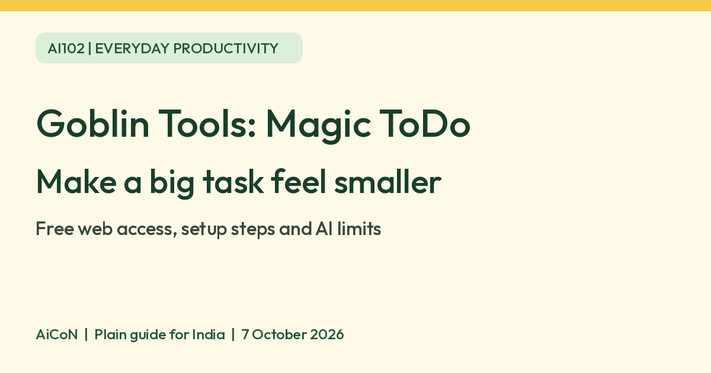

Goblin Tools: turn a big task into smaller steps
Magic ToDo on Goblin Tools uses AI to suggest smaller steps for an everyday task. The basic website is free, per Goblin Tools. Paid mobile apps and an optional Pro subscription are separate from that free web access.

What is Magic ToDo?
Magic ToDo is a task list with an automatic breakdown feature. Add a task such as tidying a desk, then ask the tool to suggest the steps involved. You decide which steps make sense and which to change or remove.
Goblin Tools says its tools were mostly designed for neurodivergent people who find some tasks overwhelming or difficult, while being available to everyone. This is an everyday planning aid, not a diagnosis, treatment or clinical service.
Ideas for readers in Kerala and India
As an editorial suggestion, try a simple task such as packing for a short trip, organising study notes or cleaning a kitchen shelf. A generated list can give you a starting point when the whole job feels vague.
Do not use generated steps as the source of truth for a visa, government application, medicine schedule, money decision or safety task. Verify real requirements with the relevant official source. Local procedures, Malayalam support and Indian-network performance were not tested.
How to start on the free website
- Open goblin.tools/todo in your browser.
- Type one ordinary task in the Add new item field. Keep private details out of it.
- Use the plus button to add it to the list.
- Adjust the chilli or spiciness setting if needed. The official help says more spice asks for more steps when a task feels hard or stressful. It is a hint, not an exact measurement.
- Use the task's automatic breakdown control to request smaller steps. Its icon or placement may change with the version.
- Read the suggested steps before using them. Edit, remove or add subtasks through the task's tools menu.
- Work through the useful steps and mark items complete. Use the list's export options if you want to keep a copy elsewhere.
The page's official help explains task menus, filters, reordering, export and undo/redo. We inspected those controls in the live page source but did not submit a test task or evaluate generated output.
Free website, paid apps and Pro
| Free verdict | The basic Goblin Tools website is free. The official About page says it has no ads and that existing free features will remain free. |
|---|---|
| Mobile apps | Official Android and iOS apps are paid. We verified Goblin Tools in India's App Store; do not assume the app is free because the website is. |
| Pro | An optional paid subscription adds cross-device sync, tool history, templates, shareable lists and custom instructions. Terms say it renews automatically until cancelled. |
| Price | We did not verify a final Pro checkout price for India. Check the INR total, billing period and renewal conditions shown before paying. You do not need Pro to try the basic website. |
| India availability | Live India iPhone app listing verified. Basic website publicly accessible in our check. Indian-network use, Android India installation and Malayalam output quality were not tested. |
Your text still goes to AI processing
The privacy policy says necessary input is sent to OpenAI servers for tools that use its technology. Without Pro, Goblin Tools says typed content is stored only in your browser, not retained on its own servers. That does not mean the AI runs entirely on your device.
With Pro, the policy says lists, recent tool history, templates and custom instructions are stored on its servers for access on other devices. Do not paste passwords, bank details, identification numbers, medical records or private information about another person into a task.
Check the steps before following them
Goblin Tools' own About page calls AI results guesswork. Its terms say output can be wrong, incomplete or unsuitable, and should not be relied on for important medical, legal, financial or safety matters. A smaller list is useful only if its steps fit your situation.
If a task needs a deadline, materials or an official procedure, add those from your own verified information. Do not treat a generated time estimate or category as a fact.
Frequently asked questions
Do I need to buy the app?
No. Start with the free basic website in your browser.
What does more spice do?
It hints that the task feels harder or more stressful, so the tool should try to break it into more steps.
Is it an ADHD treatment?
No clinical claim is made here. The creator describes a planning aid designed with neurodivergent users in mind.
Does it work offline?
Offline AI generation was not verified. The official privacy policy describes sending necessary input to external AI processing.
Are my tasks automatically synced?
Do not assume that. Cross-device sync is listed as an optional Pro feature.
Sources: Magic ToDo, About and free scope, Privacy, Terms, India App Store. Checked 7 October 2026.